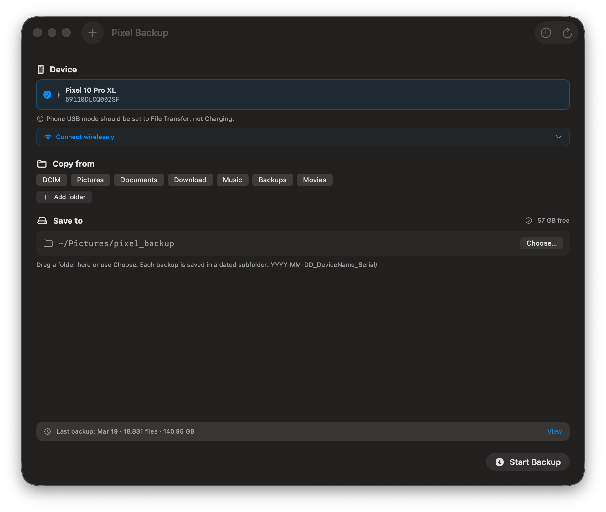

Back up your Android phone to your Mac—fast, resumable, lossless.
Pixel Backup copies your entire Android photo/video library to macOS byte-for-byte with
adb pull—no re-encoding, no renaming, and no deletes. In the
motivation behind this project, transfers over 140GB used to fail or take
over a day; with this resumable approach, typical backups finish in under 10 minutes
(in the author’s setup).
Dummy-user mode: pick one option below, follow the 3 steps, and start the backup.
Everything is resumable—re-running continues where you left off.
Install in 3 steps (macOS app)
Download the latest PixelBackup-*.dmg from Releases.
Open the DMG and drag PixelBackup to Applications.
Launch it (Spotlight or Applications) and connect your phone via USB or Wi-Fi.
If macOS shows an "unidentified developer" warning: right-click the app icon and choose
Open once. Notarized releases do not show this prompt.

What you get
Device picker, folder toggles, live progress, speed & ETA, and fast backup history (loads from manifest.tsv) that stays usable for huge backups.
Option A: macOS app (DMG)
Best for dummy users. A GUI wrapper around the shell script.
Option B: shell script (no installer)
Works on any macOS as long as adb is available in your PATH.
Dummy-user flow: install `adb`, download the script, run it. (No installers, no trust prompts.)
Install adb (easy mode)
Download pixel_backup.sh
Run the script
brew install android-platform-tools
adb versionchmod +x pixel_backup.sh
./pixel_backup.sh
Don’t have Homebrew?
Install adb by downloading Google’s platform-tools for macOS, extracting them, then ensuring adb runs and prints a version.
After you extract: run adb version (or run the adb binary from inside the extracted folder).
If your organization blocks installing apps, this option avoids macOS trust prompts.
Will this re-encode or rename my files?
No. Pixel Backup pulls your files byte-for-byte with adb pull. It does not transcode, rename, or delete anything on your Mac.
What happens if the transfer fails halfway?
You can re-run anytime. Pixel Backup is resumable and skips already-copied files by size match, so you only pay for what is missing.
Do I need USB, or can I do Wi-Fi?
Both. The app supports Wireless ADB by connecting over IP. If you prefer USB-only, use the USB device flow.
Where do backups get saved?
Each run creates a date-stamped folder like YYYY-MM-DD_DeviceName_Serial under your chosen destination root.